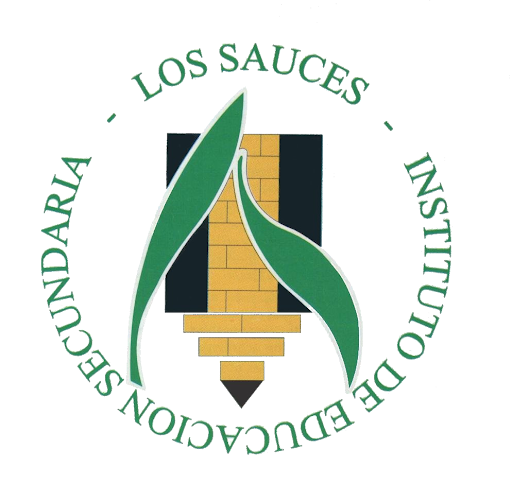

Eso, bachillerato y ciclos
Asignaturas de 1º
- Programación
- Lenguajes de macas y sistemas gestores de información
- Sistemas informñaticos
- Bases de datos
- Inglés Profesional
- Itinerario personal para la empleabilidad (IPE)
- Ciudadania e identidad digital
- Entornos de desarrollo